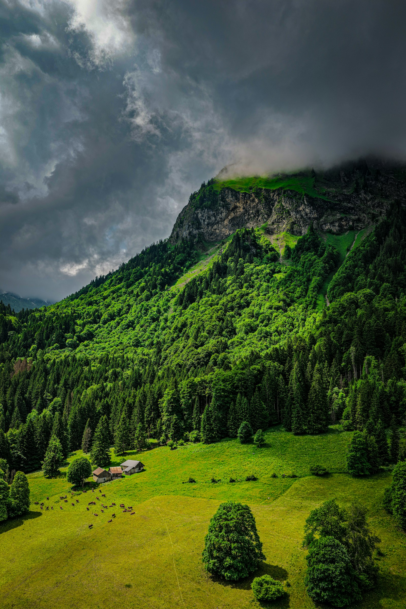
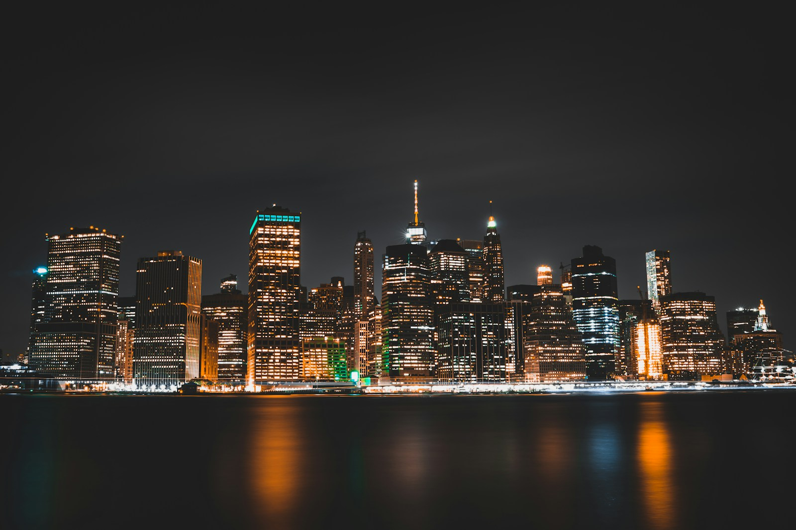
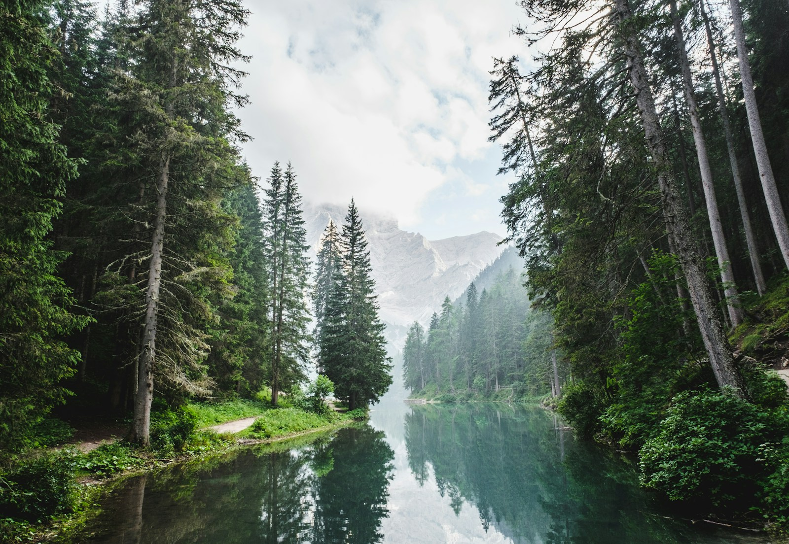
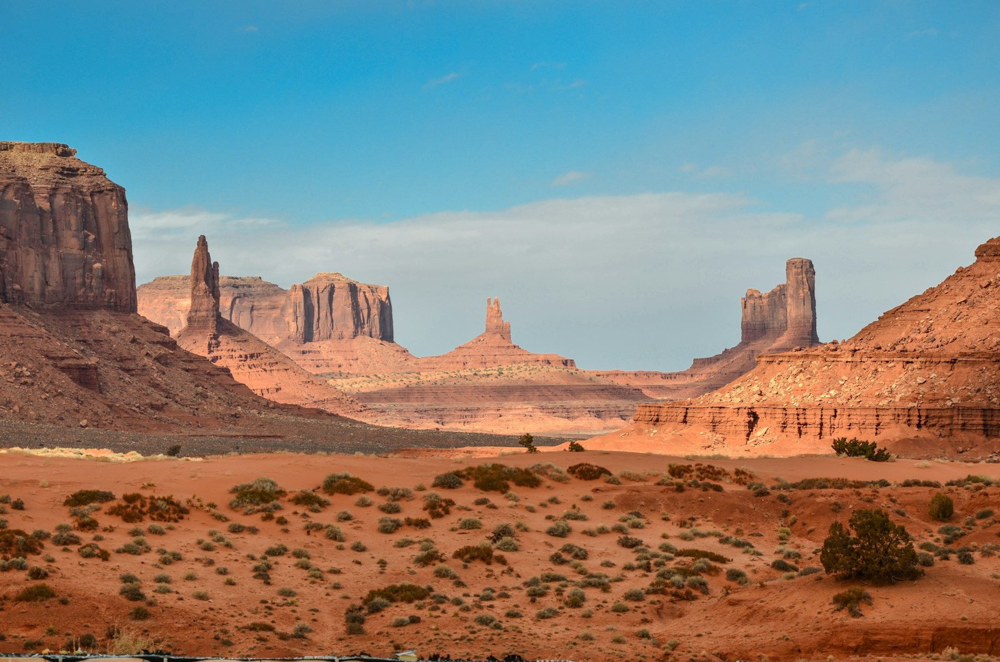
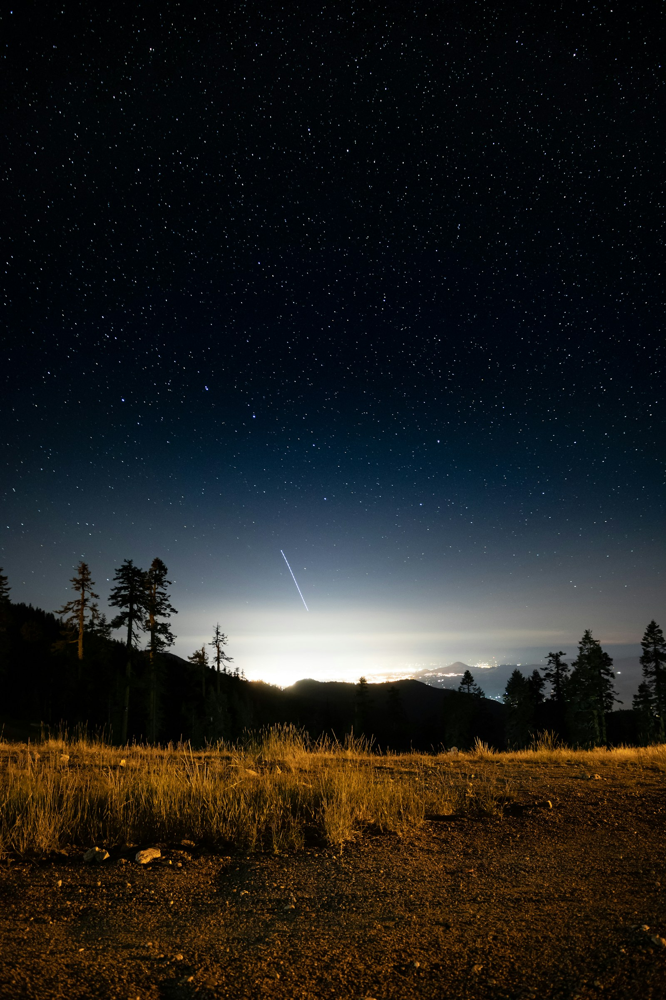

SÉRIE ORIGINAL CINEFLEX
Além do Horizonte
Onde o caminho termina, uma nova história começa. Descubra paisagens, encontros e escolhas que mudam tudo.
Novas histórias para a sua lista
Em alta agora
Ver todos
Cidade sem Sono SuspenseCidade sem Sono

O Último Refúgio DramaO Último Refúgio

Terra de Silêncios AventuraTerra de Silêncios
Mar Aberto

Entre Estrelas FicçãoEntre Estrelas
Aventura e descobertas
Ver todosTerra de Silêncios
Mar Aberto
Entre Estrelas
Dias de Inverno
A Última Sessão
Além do Horizonte
Sobre os títulos
Selecione um título para ler a sinopse.
Além do Horizonte Aventura · 2026
Uma expedição encontra novos caminhos entre montanhas e antigas histórias.
Classificação indicativa: 12. Catálogo fictício para demonstração.
Cidade sem Sono Suspense · 2025
Uma jornalista segue pistas que mudam sua forma de enxergar a cidade.
Classificação indicativa: 14. Catálogo fictício para demonstração.
O Último Refúgio Drama · 2026
Uma família reencontra suas raízes em uma floresta distante.
Classificação indicativa: 12. Catálogo fictício para demonstração.
Terra de Silêncios Aventura · 2025
Uma travessia pelo deserto revela encontros inesperados.
Classificação indicativa: 10. Catálogo fictício para demonstração.
Mar Aberto Documentário · 2026
Paisagens e histórias de quem vive junto ao oceano.
Classificação indicativa: Livre. Catálogo fictício para demonstração.
Entre Estrelas Ficção · 2026
Uma viagem pelos mistérios do céu e pelas escolhas de seus exploradores.
Classificação indicativa: 12. Catálogo fictício para demonstração.
Dias de Inverno Drama · 2025
Uma pequena comunidade transforma uma despedida em um novo começo.
Classificação indicativa: 10. Catálogo fictício para demonstração.
A Última Sessão Drama · 2024
Um antigo cinema guarda lembranças de toda uma cidade.
Classificação indicativa: 12. Catálogo fictício para demonstração.